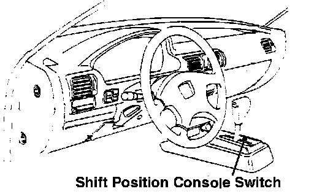

Operation CHARM
: Car repair manuals for everyone.
Home
>>
Acura
>>
1990
>>
Legend Sedan V6-2675cc 2.7L SOHC FI
>>
Repair and Diagnosis
>>
Sensors and Switches
>>
Sensors and Switches - Transmission and Drivetrain
>>
Sensors and Switches - A/T
>>
Shift Interlock Switch
>>
Locations
>>
Shift Position Console Switch
Shift Position Console Switch

Below console, at the base of the shift lever.